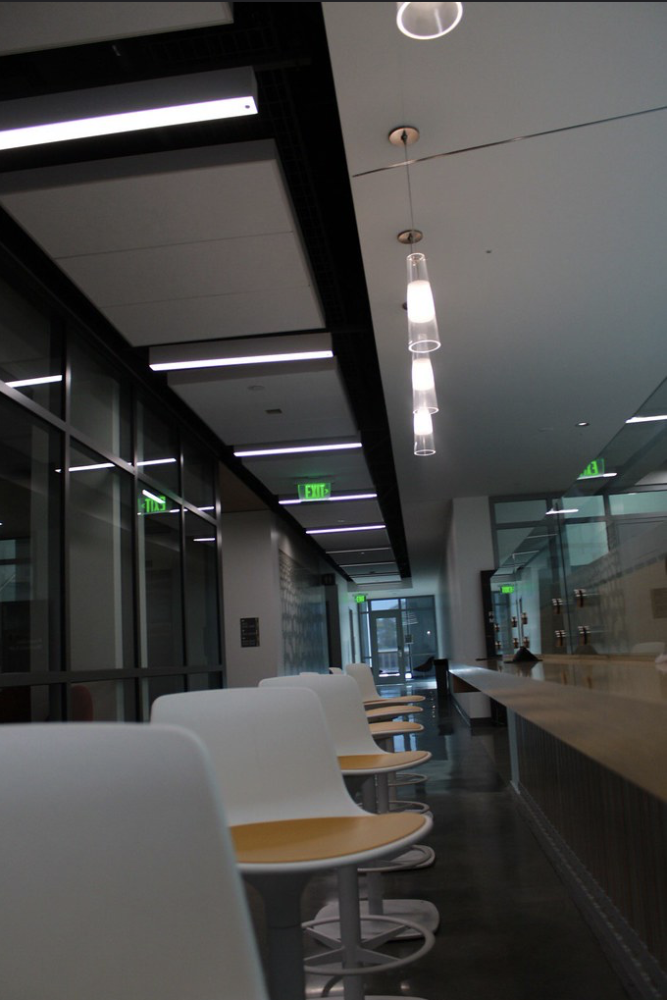
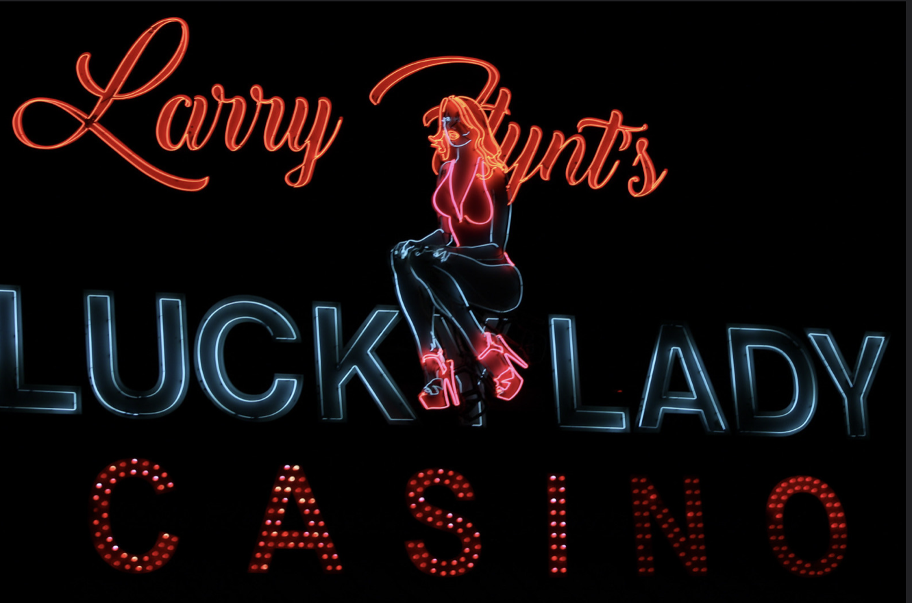

Besides liking desing, I also love taking photos. The link shows some of the photos I took in my photography class at Santa Monica and my course last year here. You can see how my photography skills have improved over time. I also included some pictures I took when I went to Disney, along with some photos of my pets. One of my favorite photos I have taken is the one I'm going to put below. I especially enjoy taking photos at night because I like how the lighting and atmosphere can make the photos more dramatic and interesting.


 Visit my Flickr
Visit my Flickr